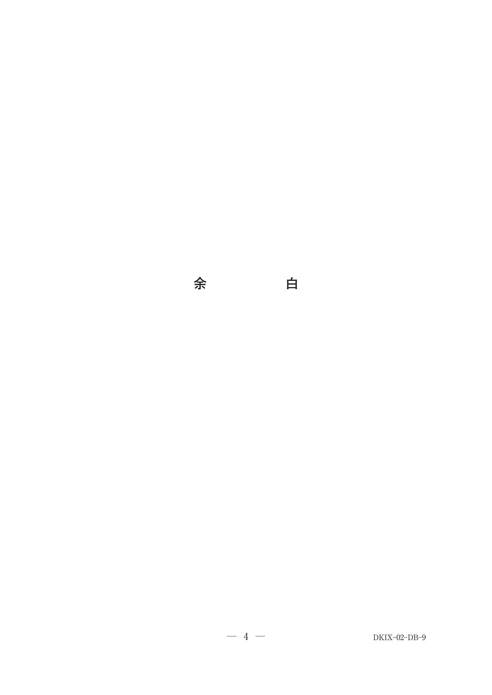
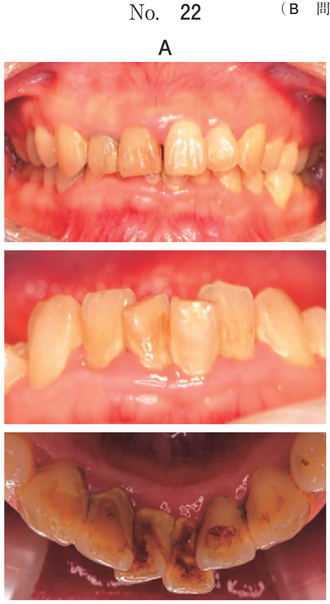
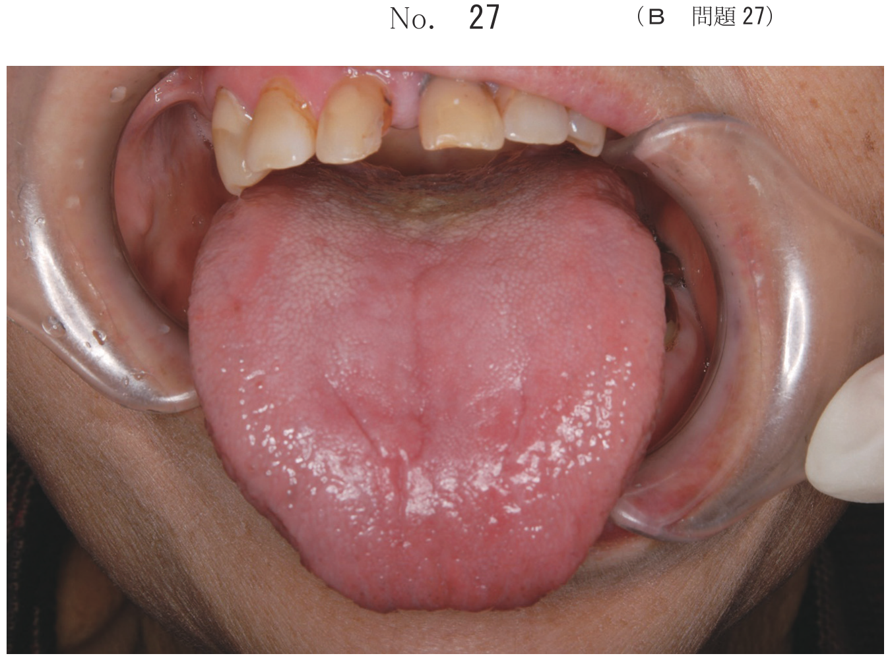

生活歯髄切断法
概要
生活歯髄切断法（水酸化カルシウム〔Ca(OH)2〕法）は、歯髄の炎症が冠部歯髄に限局している場合に冠部歯髄を根管口部で切断し、乳歯の生理的歯根吸収を期待する方法。
適応（頻出）
- 急性単純性歯髄炎
- 急性化膿性歯髄炎（冠部に限局）
- 慢性潰瘍性歯髄炎、慢性増殖性歯髄炎
- 根管歯髄に炎症変化がないこと
幼若永久歯の適応
- 外傷による露髄（受傷から時間が短い）
- 中心結節破折による一部性歯髄炎
- 若年者で歯髄の生活力が旺盛
適応判断の検査所見
| 項目 | 生活断髄の適応 |
|---|---|
| 自発痛 | 軽度あり（許容範囲） |
| 打診痛 | なし |
| 電気抵抗値 | 15〜18kΩ程度（仮性露髄〜閉鎖性） |
| X線所見 | 根尖病変なし |
術式（頻出）
手順
- 局所麻酔・ラバーダム防湿
- 罹患歯質除去
- 天蓋除去
- 冠部歯髄除去（スプーンエキスカベーター）
- 根管口明示
- 交互洗浄（次亜塩素酸Na＋過酸化水素水）
- 根管口部歯髄を平滑にする（ラウンドバー）
- 止血確認
- 断髄薬貼付（水酸化カルシウム糊剤）
- 仮封・歯冠修復
使用器具（頻出）
| 手順 | 器具 |
|---|---|
| 冠部歯髄除去 | スプーンエキスカベーター |
| 根管口部歯髄の平滑化 | ラウンドバー |
| 断髄薬貼付 | 練成充填器 |
過去問
5歳の男児。下顎左側臼歯部の摂食時痛を主訴として来院した。生活断髄中の口腔内写真（別冊No.42）を別に示す。次に行うのはどれか。1つ選べ。

b 根管口明示
c 断髄薬貼付
d 罹患歯質除去
e 冠部歯髄除去
【解説】写真では冠部歯髄が除去され根管口が明示されている状態。次に行うのは断髄薬貼付（水酸化カルシウム糊剤）。
6歳の男児。下顎右側第二乳臼歯に生活歯髄切断法を行うこととした。歯冠部歯髄除去および交互洗浄後の口腔内写真（別冊No.19）を別に示す。次に用いるのはどれか。1つ選べ。

b 練成充塡器
c ラウンドバー
d フィッシャーバー
e スプーンエキスカベーター
【解説】交互洗浄後はラウンドバーで根管口部の歯髄断面を平滑にする。練成充填器は断髄薬貼付時に使用。
5歳の女児。下顎右側第二乳臼歯の冷水痛を主訴として来院した。1か月前から気付いていたが放置していたという。打診痛はなく、電気抵抗値は15kΩである。初診時の口腔内写真（別冊No.9A）とエックス線写真（別冊No.9B）とを別に示す。適切な処置はどれか。1つ選べ。


b 生活歯髄切断法
c 抜髄法
d 感染根管治療
e 抜 歯
【解説】冷水痛あり・打診痛なし・電気抵抗値15kΩ（仮性露髄）→ 冠部歯髄に炎症が限局。X線で根尖病変なし。生活歯髄切断法の適応。
4歳6か月の男児。左側の下顎乳臼歯部の疼痛を主訴として来院した。1週前から痛みを感じるようになったという。┌Dは軽度の自発痛を認めるが、打診痛はない。初診時の口腔内写真（別冊No.33A）とエックス線写真（別冊No.33B）を別に示す。最も適切な処置はどれか。1つ選べ。


b 直接覆髄
c 生活断髄
d 抜 髄
e 抜 歯
【解説】軽度の自発痛あり・打診痛なし → 炎症が冠部歯髄に限局。生活断髄の適応。打診痛があれば根管歯髄にも炎症が波及しており抜髄となる。
12歳の男児。1時間前に転倒して前歯が破折したため来院した。自発痛はなく、動揺は認められなかった。歯髄電気診で反応を示した。初診時の口腔内写真（別冊No.41A）とエックス線写真（別冊No.41B）とを別に示す。生活歯髄切断法を行うこととした。その根拠として正しいのはどれか。すべて選べ。


b 受傷から来院までの時間が短い。
c 露髄部分が切端部に限局している。
d 受傷歯の根尖組織への影響が小さい。
e 硬組織による根尖閉鎖が期待できる。
【解説】幼若永久歯の外傷による生活断髄の適応根拠：若年者で歯髄の生活力が旺盛、受傷から短時間で感染リスクが低い、露髄が限局、根尖組織への影響小。eは根未完成歯に対するアペキソゲネーシスの説明。